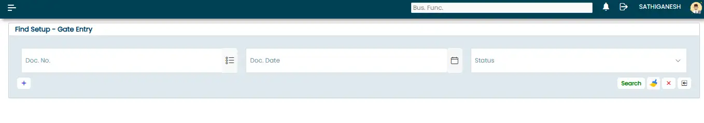
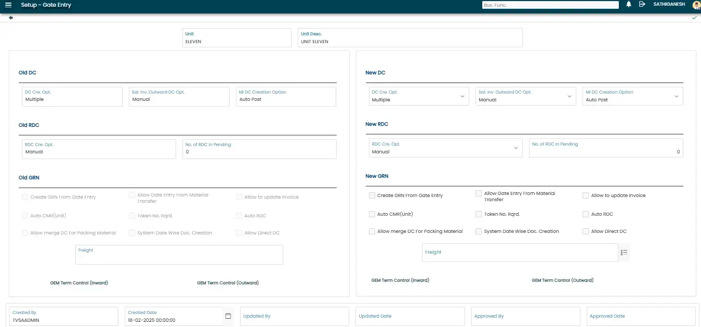
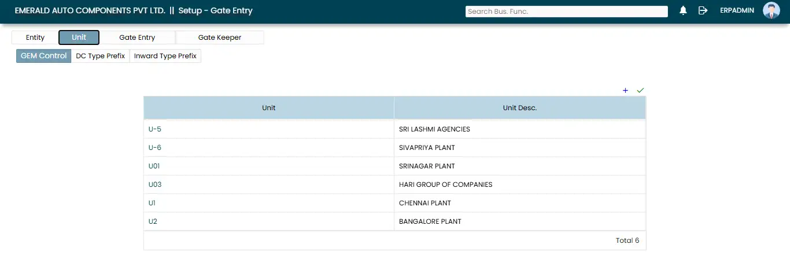
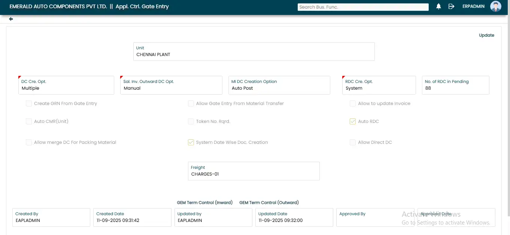
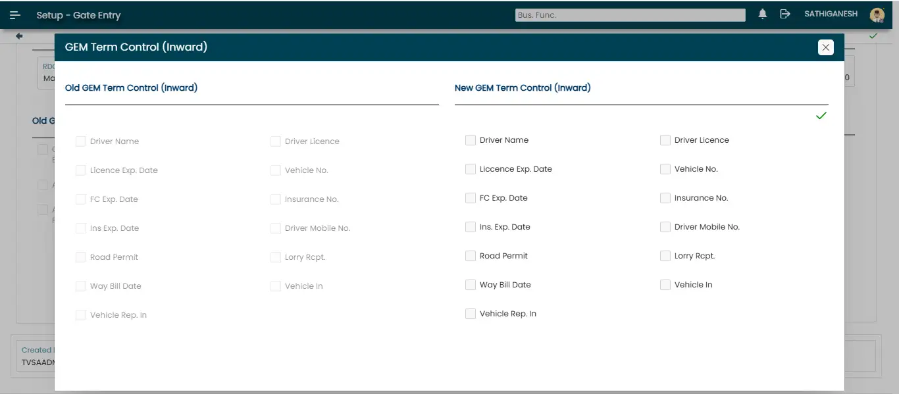
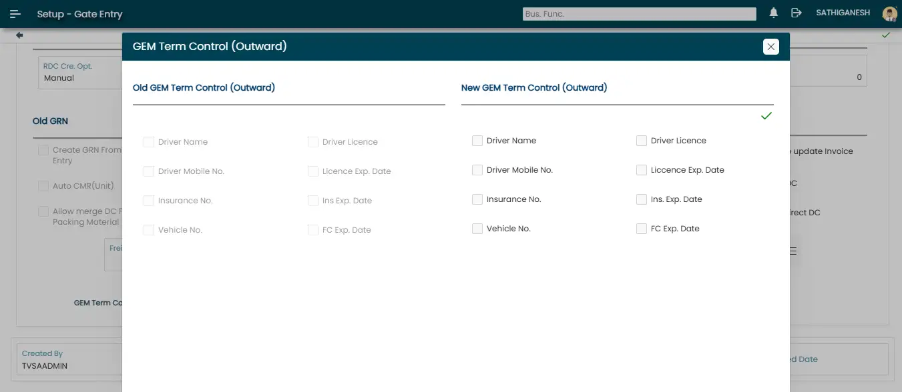
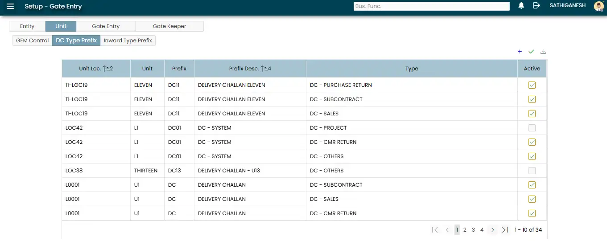
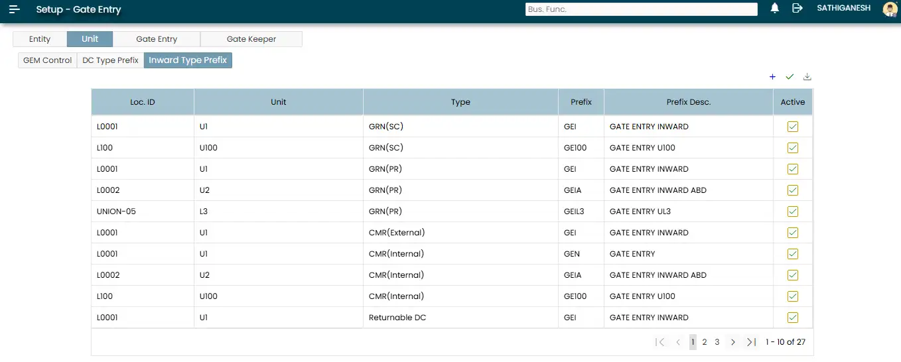

<div data-category="Gate Entry" data-title="Unit" data-updated="January 23, 2026" data-contributors="RoadmapIT" data-breadcrumb="Home,Gate Entry,Unit">
  <div class="page-content">
    <h5>Unit</h5>
    <p>Gate Entry Management such as Inward Term Control and Outward Term Control etc. for each unit can be defined in this screen</p>

    <h5>Navigation path:</h5>
    <p class="fs-6">Supply Chain \ Gate Entry \ Setup \ Setup – Gate Entry \ Unit \</p>

    <h5>GEM Control</h5>

    

    
    <ul style="list-style-type: none; align-content: center">
      <li class="mouse-icon">
        Click
        <i class="bi bi-plus fs-4 mx-2 text-primary"></i>
        to set up the application control for gate entry
      </li>
    </ul>

    
    <ul style="list-style-type: none; align-content: center">
      <li class="mouse-icon">
        DC Cre.Opt. – DC can be created for the Gate entry based on the options selected
        <ul style="list-style-type: none; align-content: center">
          <li class="mouse-icon">Multiple- DC can be created for Multiple gate entry documents</li>
          <li class="mouse-icon">Single- DC can be created for Single gate entry documents</li>
        </ul>
      </li>
      <li class="mouse-icon">
        Sal.Inv.Outward DC Opt- Sales Invoice DC can be created based on the option selected
        <ul style="list-style-type: none; align-content: center">
          <li class="mouse-icon">System – DC will be created automatically by system</li>
          <li class="mouse-icon">Manual – DC have to be created manually</li>
        </ul>
      </li>
      <li class="mouse-icon">
        MI DC Creation option- Material invoice can be posted based on the option selected
        <ul style="list-style-type: none; align-content: center">
          <li class="mouse-icon">Auto Post – MI will be posted automatically</li>
          <li class="mouse-icon">Manual Post – MI will be posted manually</li>
        </ul>
      </li>
      <li class="mouse-icon">
        RDC Cre. Opt.- RDC can be created based on the option selected
        <ul style="list-style-type: none; align-content: center">
          <li class="mouse-icon">System – RDC will be created automatically by system</li>
          <li class="mouse-icon">Manual – RDC have to be created manually</li>
        </ul>
      </li>
      <li class="mouse-icon">If Create GRN from Gate Entry check box is selected then GRN can be created for the necessary gate entry document</li>
      <li class="mouse-icon">If allow Gate Entry from Material Transfer Checkbox is selected then Gate entry can be created for necessary gate entry document</li>
      <li class="mouse-icon">If Allow to update invoice checkbox is selected then invoice can be updated for gate entry</li>
      <li class="mouse-icon">Auto CMR (Unit) checkbox can be selected if CMR has to be created automatically in Units</li>
      <li class="mouse-icon">Token No. Rqrd. Checkbox can be selected to generate the token number for the gate entry document</li>
      <li class="mouse-icon">Auto RDC checkbox can be selected to generate the RDC automatically against the gate entry document</li>
      <li class="mouse-icon">Allow merge DC for Packing material can be selected to generate DC for multiple packing material against the gate entry</li>
      <li class="mouse-icon">System Date wise document creation checkbox can be selected to create the document based on the system date</li>
      <li class="mouse-icon">Allow Direct DC checkbox can be selected to create DC without gate entry document</li>
    </ul>

    
    
    <ul style="list-style-type: none; align-content: center">
      <li class="mouse-icon">To change the controls defined for each unit, click on the Unit</li>
    </ul>
    <h5>GEM Term Inward</h5>
    
    <ul style="list-style-type: none; align-content: center">
      <li class="mouse-icon">Select the necessary details that needs to be involved in inward document</li>
      <li class="mouse-icon">Click <i class="bi bi-check-lg fs-4 mx-1 text-success"></i> to Save</li>
    </ul>

    <h5>GEM Term Outward</h5>
    
    <ul style="list-style-type: none; align-content: center">
      <li class="mouse-icon">Select the necessary details that needs to be involved in outward document</li>
      <li class="mouse-icon">Click <i class="bi bi-check-lg fs-4 mx-1 text-success"></i> to Save</li>
      <li class="mouse-icon">Click on Update button to forward the document for workflow approvals.</li>
    </ul>

    <h5>DC Type prefix</h5>
    
    <ul style="list-style-type: none; align-content: center">
      <li class="mouse-icon">Select/Enter the Unit. Loc</li>
      <li class="mouse-icon">Select the Prefix</li>
      <li class="mouse-icon">Select the type</li>
      <li class="mouse-icon">Enable Active checkbox</li>
      <li class="mouse-icon">Click <i class="bi bi-check-lg fs-4 mx-1 text-success"></i> to Save</li>
    </ul>

    <h5>Inward Type prefix</h5>
    
    <ul style="list-style-type: none; align-content: center">
      <li class="mouse-icon">Select/Enter the Loc ID</li>
      <li class="mouse-icon">Select the Type</li>
      <li class="mouse-icon">Select the Prefix</li>
      <li class="mouse-icon">Enable Active checkbox</li>
      <li class="mouse-icon">Click to Save</li>
    </ul>
  </div>
</div>
